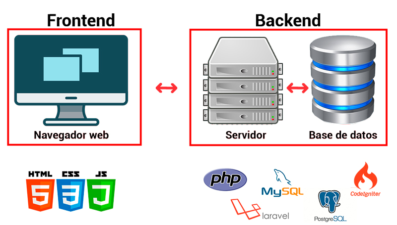

¿Qué es la Interacción Humano-Computadora?
La disciplina que estudia cómo las personas interactúan con las
computadoras y hasta qué punto las computadoras se desarrollan para
interactuar con las personas se llama Interacción
Humano-Computadora. HCI consta de tres componentes: los usuarios,
los ordenadores y la interacción entre ellos.
La Interacción Humano-Computadora se convirtió oficialmente en una
disciplina con el advenimiento de la computadora personal. Con el
primer Macintosh, IBM PC 5150 y Commodore 64 utilizados en la
oficina, la gente empezó a darse cuenta de cómo esta transición
afectará no sólo a su trabajo sino a sus vidas en general. Los PCs
fueron lanzados con muchas nuevas características como procesadores
de texto, facilidades de juego y ayudas de contabilidad. Con el
tiempo, su nivel de sofisticación aumentó hasta el punto en que el
objetivo era hacer que la interacción hombre-computadora se
asemejara a la interacción entre humanos, de la forma más natural y
sin fisuras posible.
Tecnologías Frontend y Backend :

¿Qué es el Front End?:
Front End es la parte de una aplicación que interactúa con los usuarios, es conocida como el lado del cliente.
Básicamente es todo lo que vemos en la pantalla cuando accedemos a un sitio web o aplicación: tipos de letra, colores,
adaptación para distintas pantallas(RWD), los efectos del ratón, teclado, movimientos, desplazamientos, efectos
visuales… y otros elementos que permiten navegar dentro de una página web. Este conjunto crea la experiencia del
usuario.
Como hemos dicho, el desarrollador front end se encarga de la experiencia del usuario, es decir, en el momento en el que
este entra a una página web, debe ser capaz de navegar por ella, por lo que el usuario verá una interface sencilla de
usar, atractiva y funcional.
Un desarrollador front end debe conocer los siguientes lenguajes de programación: HTML5, CSS3, JavaScript, Jquery, Ajax.
¿Qué es el backend?:
El Backend es en pocas palabras el área lógica de toda web, app, o programa. El Backend se refiere a la arquitectura
interna del sitio y asegura que todos los elementos funcionen de forma idónea. Y lo más importante, NO ES VISIBLE a los
ojos del usuario final, que muchas veces ni siquiera es consciente del reto que implica.
El Backend no tiene ningún elemento visual, sino que se refiere al área lógica de la web. Es la rama de arquitectura
interna del sitio, la función de ingeniería que los programadores desarrollamos, es la funcionalidad propia de la web.
No se ve pero está ahí y es vital para que la web funcione, mucho más que la tipografía y el copyright.
Leer Mas....
 HTML: Este es un lenguaje de programación usado para
la creación de sitios web. Como las tecnologías evolucionan a pasos
agigantados, HTML está en constante renovación, la versión actual es
HTML5. Consiste en un conjunto de códigos cortos, que se clasifican
como archivos de textos en las etiquetas. Es decir, el texto se
guarda en un archivo llamado HTML que se puede encontrar a través de
los buscadores. Cada una de las etiquetas generadas tiene diferentes
funciones. En resumen, HTML sirve para describir el contenido de un
sitio web, como la información estructurada de párrafos, imágenes,
etc. Por eso, HTML es una de las tecnologías web indispensables para
cualquier desarrollador.
Leer Mas....
HTML: Este es un lenguaje de programación usado para
la creación de sitios web. Como las tecnologías evolucionan a pasos
agigantados, HTML está en constante renovación, la versión actual es
HTML5. Consiste en un conjunto de códigos cortos, que se clasifican
como archivos de textos en las etiquetas. Es decir, el texto se
guarda en un archivo llamado HTML que se puede encontrar a través de
los buscadores. Cada una de las etiquetas generadas tiene diferentes
funciones. En resumen, HTML sirve para describir el contenido de un
sitio web, como la información estructurada de párrafos, imágenes,
etc. Por eso, HTML es una de las tecnologías web indispensables para
cualquier desarrollador.
Leer Mas....
 CSS: Es una de las tecnologías web a la que más recurren los
programadores gráficos a la hora de desarrollar sus proyectos. Es un
lenguaje de diseño gráfico que sirve, entre otras muchas funciones,
para indicar la representación visual de las estructuras HTML, así
como las estructuras HTML definidas anteriormente deben
representarse visualmente. De esta manera, el lenguaje CSS sirve
para acotar y trazar el aspecto visual de las etiquetas generadas
por el HTML.
Leer Mas....
CSS: Es una de las tecnologías web a la que más recurren los
programadores gráficos a la hora de desarrollar sus proyectos. Es un
lenguaje de diseño gráfico que sirve, entre otras muchas funciones,
para indicar la representación visual de las estructuras HTML, así
como las estructuras HTML definidas anteriormente deben
representarse visualmente. De esta manera, el lenguaje CSS sirve
para acotar y trazar el aspecto visual de las etiquetas generadas
por el HTML.
Leer Mas....
 JavaScript: Al usar este lenguaje de programación
multiplataforma, es posible dar una mayor interactividad y dinamismo
a los sitios web. Y esto es así porque permite crear tanto
animaciones como objetos, localizar errores en formularios, cambiar
elementos web de manera intuitiva y crear cookies, etc. Además,
también permite desarrollar aplicaciones tan potentes como Facebook
o Twitter. Por esto, JavaScript es una de las tecnologías web más
usadas en la actualidad.
Leer Mas....
JavaScript: Al usar este lenguaje de programación
multiplataforma, es posible dar una mayor interactividad y dinamismo
a los sitios web. Y esto es así porque permite crear tanto
animaciones como objetos, localizar errores en formularios, cambiar
elementos web de manera intuitiva y crear cookies, etc. Además,
también permite desarrollar aplicaciones tan potentes como Facebook
o Twitter. Por esto, JavaScript es una de las tecnologías web más
usadas en la actualidad.
Leer Mas....